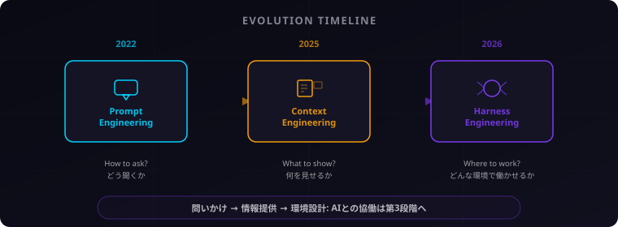
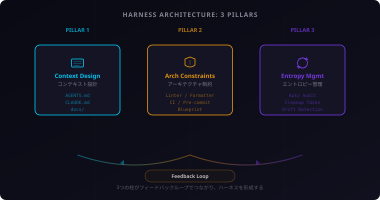

Prism
Prism
ハーネスエンジニアリングとは何か ― AIエージェント時代の「環境設計」という新パラダイム
コードを書く時代が終わり、環境を設計する時代が始まった。その転換点を一緒に見ていきましょう。
AIの生産性パラドックス ― 速くなったのに、遅くなった
2026年、ある調査結果がエンジニアリング組織を騒然とさせた。
Faros AIの調査によれば、AIコーディングツールの導入により、開発者ひとりあたりのマージされたPR数は98%増加した。ほぼ倍だ。しかし同時に、PRレビューに費やされる時間は91%増加していた。
個人は速くなった。でも組織は遅くなった。
これは「AIが使えない」という話ではない。むしろ逆だ。AIが速すぎるのだ。高速で生成されるコードに、人間のレビュープロセスが追いつかない。マージキューは膨張し、レビュアーは疲弊し、品質チェックは形骸化する。
比喩で言えば、「速く走れるが、どこへ走るかわからない馬」を手に入れたようなものだ。馬の脚力は申し分ない。問題は、手綱がないことだった。
プロンプトからコンテキスト、そしてハーネスへ
この問題を理解するために、AIとの協働がどう進化してきたかを振り返ろう。
第1段階: プロンプトエンジニアリング（2022年〜）
ChatGPTの登場とともに広まった概念だ。「どう聞くか」が焦点だった。Few-shotプロンプト、Chain of Thought、ロールプレイ——さまざまなテクニックが生まれ、「AIにうまく聞ける人」が価値を持った。
だが限界はすぐに来た。どんなに巧みな質問をしても、AIが持っている情報が古かったり不十分だったりすれば、出力の質は上がらない。
第2段階: コンテキストエンジニアリング（2025年〜）
焦点が「何を見せるか」に移った。RAG（検索拡張生成）、ツール呼び出し、メモリシステム——AIに適切な情報を適切なタイミングで提供する技術が成熟していった。Shopify CEOのTobi Lutkeはこう述べている。「本当のスキルはプロンプトエンジニアリングではない。コンテキストエンジニアリングだ」
コンテキストエンジニアリングは大きな前進だった。しかしこれも、「1回のやり取りをどう最適化するか」という枠組みの延長線上にある。AIエージェントが自律的に複数のタスクをこなす時代には、それだけでは足りない。
第3段階: ハーネスエンジニアリング（2026年〜）
「どんな環境で働かせるか」——これがハーネスエンジニアリングの問いだ。
「ハーネス」とは馬具、つまり手綱や鞍のことだ。馬を制御するのは騎手の力ではなく、馬具という仕組みだ。同じように、AIエージェントを制御するのはプロンプトの巧みさではなく、エージェントが動く環境そのものだという考え方だ。
AGENTS.md、CLAUDE.md、CIパイプライン、リンター、テスト、ディレクトリ構造——これらすべてが「馬具」になる。エージェントはこの環境の中で自律的に動き、ガードレールに守られながら成果を出す。

ハーネスの3本柱
ハーネスエンジニアリングは、3つの柱で構成される。
柱1: コンテキスト設計
エージェントが「何を知っているか」を設計する層だ。
AGENTS.mdやCLAUDE.mdといったファイルに、プロジェクトの規約、アーキテクチャの方針、禁止事項を書き込む。エージェントはタスクを開始するたびにこれらを読み込み、「このプロジェクトではどう振る舞うべきか」を理解する。
人間の新人研修を想像してほしい。初日にオフィスの場所、チームのルール、コーディング規約を教わる。AGENTS.mdは、エージェントにとっての「新人研修マニュアル」だ。
柱2: アーキテクチャ制約
エージェントが「何をしてはいけないか」を強制する層だ。
リンター、フォーマッター、CIパイプライン、プリコミットフック。これらは人間の開発者にとっても馴染み深いツールだが、ハーネスエンジニアリングではこれらを「エージェントの行動を制約するガードレール」として再定義する。
エージェントが生成したコードがリンターを通らなければ、自動的に修正される。テストが通らなければ、マージできない。人間がレビューで指摘する前に、機械的なチェックが品質を担保する。
さらに進んだ手法がBlueprint（ブループリント）パターンだ。エージェントが自由にコードを書く前に、まず設計書（Blueprint）を人間に提示させる。人間は「何を作るか」を承認し、「どう作るか」はエージェントに任せる。これにより、方向性のズレを最小限に抑えられる。
柱3: エントロピー管理
エージェントが「散らかしたものを片付ける」仕組みだ。
エージェントが大量のコードを生成すると、コードベースは時間とともに複雑化する。未使用のインポート、重複した関数、一貫性のないネーミング——こうした「エントロピー（乱雑さ）」は放置すると指数関数的に増大する。
ハーネスエンジニアリングでは、定期的な自動監査、クリーンアップタスク、ドリフト検出（設計からの逸脱を検知する仕組み）を組み込む。エージェントが生成し、エージェントが清掃する。人間は方針を決めるだけだ。
制約を増やすほどエージェントの生産性は上がる——この逆説がハーネスの核心です。自由に走らせるより、レーンを引いたほうが速く、確実にゴールに着く。

先進企業はすでに実践している
ハーネスエンジニアリングは理論だけの話ではない。世界をリードする企業が、すでにこのアプローチで成果を出している。
OpenAI: 100万行、ゼロ手書き
OpenAIのCodexチームは、最近のプロジェクトで100万行以上のコードをAIに生成させた。人間が手書きしたコードはゼロだ。彼らが代わりに注力したのは、わずか100行のAGENTS.mdファイルだった。
このファイルに、コーディング規約、テスト方針、アーキテクチャルールを記述した。エージェントはこの100行を「憲法」として自律的にコードを書き、テストし、PRを出す。人間は設計とレビューに集中した。
Anthropic: 2ヶ月間、手書きゼロ
Claude Codeを開発するAnthropicのチームは、2ヶ月間にわたりコードを手書きしなかったと報告している。開発者は平均5つ以上のエージェントセッションを並行して走らせ、自分は設計とレビューに専念した。
ポイントは「5つ並行」という数字だ。1人の開発者が5人分の生産性を出す——ただし、そのためにはエージェントが迷わない環境が必要だった。
Stripe: Blueprintと品質の両立
StripeはBlueprintパターンを体系化した企業として知られる。エージェントにまず設計書を書かせ、人間が承認してからコードを生成させる。このワークフローで週1,300件以上のPRをさばいている。
「80%の品質で生成し、残り20%を20分で仕上げる」がStripeの哲学だ。完璧を求めるのではなく、「十分に良い」出力を高速に回すことで、全体のスループットを最大化している。
3社に共通するのは「Howを手放し、WhyとWhatに集中する」こと。コードの書き方はエージェントに任せ、何をなぜ作るかに人間のリソースを全振りしている。
エンジニアの役割はどう変わるか
ハーネスエンジニアリングの普及は、エンジニアの仕事を根本から変える。
変化を整理しよう。
- コード記述 → 環境設計: コードを書くのではなく、エージェントが良いコードを書ける環境を設計する
- コードレビュー → 出力評価: 行単位でコードを読むのではなく、成果物全体の品質を評価する
- テスト作成 → テスト戦略: テストコードを書くのではなく、何をどこまでテストするかの方針を決める
ここで見逃せないデータがある。Findyの調査によれば、AIツールの導入によりシニアエンジニアの生産性は10倍になった一方、ジュニアエンジニアの生産性はむしろ低下した。
なぜか。シニアには「何を作るべきか」「この設計で問題ないか」を判断する基礎力がある。AIが出力したものを的確に評価し、方向修正できる。ジュニアにはその判断基準がないため、AIの出力を鵜呑みにし、問題が大きくなってから気づく。
AIは増幅装置だ。スキルのある人のスキルを増幅し、スキルのない人の「スキルのなさ」も増幅する。
基礎力のない人にとってAIは増幅装置ではなく拡声器——ノイズも増幅される。これは前回のバイブコーディングの記事で述べたパラドックスと同根の問題です。
始め方 ― 3つのレベル
ハーネスエンジニアリングは大げさなものではない。今日から始められる。
Level 1: 個人（1〜2時間）
まずは自分のプロジェクトにCLAUDE.md（または同等のコンテキストファイル）を置く。プロジェクトの規約、よく使うパターン、避けるべきアンチパターンを書き込む。加えて、プリコミットフックでリンターとフォーマッターを自動実行する。
これだけで、エージェントの出力品質は劇的に上がる。所要時間は1〜2時間。投資対効果は抜群だ。
Level 2: チーム（1〜2日）
チーム全体でAGENTS.mdを整備し、CI制約を強化する。テストカバレッジの閾値設定、型チェックの必須化、命名規則の自動検査。エージェントが生成したPRが自動チェックを通らなければマージできない仕組みを作る。
Blueprintパターンの導入も検討する。大きな変更はまず設計書をレビューしてからコード生成に進む。
Level 3: 組織（1〜2週間）
組織全体のエージェント基盤を構築する。エージェントの活動を監視する観測性（Observability）ダッシュボード、コードベースの複雑度を定期計測するエントロピー監査、成功パターンを組織内で共有するナレッジベース。
ここまで来ると、エージェントは「ツール」ではなく「チームメンバー」として機能し始める。
小さく始めて、失敗をハーネスに変換し続けることが唯一の正解。「エージェントがミスをした → ルールを追加する → ハーネスが強化される」このサイクルが回り始めれば、あなたのプロジェクトは加速度的に良くなります。
まとめ
要点を3つに絞る。
- ハーネスエンジニアリングは「環境設計」。プロンプトの巧みさでも、コンテキストの量でもなく、エージェントが自律的に動ける環境そのものを設計する
- 3本柱はコンテキスト・制約・エントロピー管理。何を知らせ、何を禁止し、どう片付けるか。この3つでエージェントの品質が決まる
- モデルはコモディティ、ハーネスが競争力。同じAIモデルを使っていても、ハーネスの質が違えば成果は桁違いに変わる
さらに学びたい方のために、関連キーワードを整理しておく。
| キーワード | 概要 |
|---|---|
| AGENTS.md / CLAUDE.md | エージェント向けコンテキストファイル。プロジェクト規約を記述 |
| Blueprint パターン | 設計→承認→実装の3ステップワークフロー |
| エントロピー管理 | コードベースの乱雑さを定量的に計測・制御する手法 |
| 観測性 (Observability) | エージェントの活動ログ・メトリクスを収集・可視化する仕組み |
| Agentic Coding | AIエージェントによる自律的なソフトウェア開発の総称 |
ハーネスエンジニアリングは、一過性のバズワードではない。AIエージェントが当たり前になった世界で、ソフトウェア開発の構造そのものが変わろうとしている。その変化の核心にあるのが「環境を設計する」という発想だ。
——別の角度から見ると、最も重要なコードは、AIが書くコードではなく、AIが読む100行のほうかもしれない。
数字は嘘をつかない。個人の生産性と組織の成果は別物。この認識のズレこそが、ハーネスエンジニアリングが生まれた背景です。